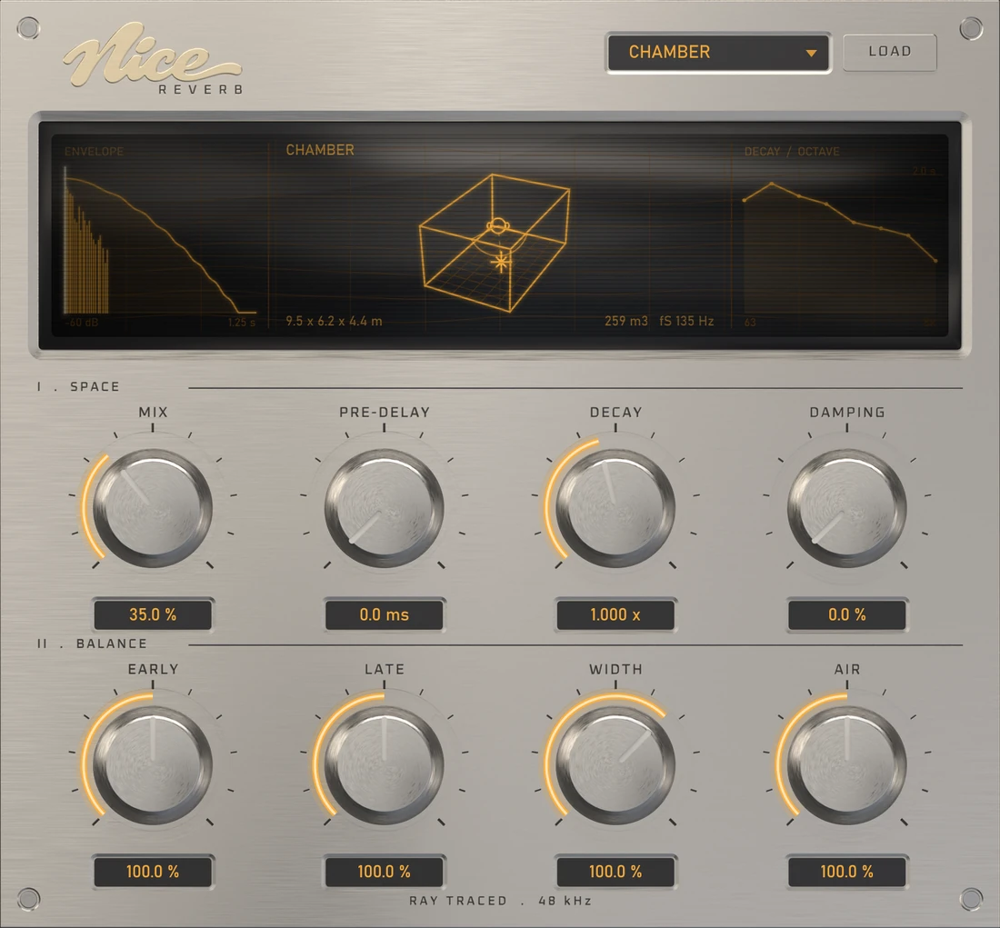

Nice Reverb: a reverb that solves the room
Nice Reverb is a free, physically modelled reverb plugin for Windows and macOS. Its rooms are not presets tuned by ear on a bank of delay lines. Each one is solved offline from its dimensions and its surfaces, and the plugin plays back the result. If a room sounds boxy, it is because a room that shape is boxy.
Download the free betaVST3 and AU · 64-bit · Windows 10/11 and macOS 10.15+

How a solved room differs from an algorithmic reverb
Most reverb plugins are a network of delays and filters, tuned until they sound plausible. Convolution reverbs take the other route and play back a recording of a real space. Nice Reverb does neither: it computes what a room would do, using a different method in each part of the spectrum where a different method is the right one.
Room modes, at the bottom
Below the Schroeder frequency a room is not diffuse. It is a handful of standing waves, and which ones depend entirely on the dimensions. Those are solved analytically. This is the part that makes a small room sound small.
Image sources, early
The first reflections are computed exactly, by mirroring the source in each surface, to each ear separately. Their timing is what tells you the size and shape of a space before the tail has arrived.
Monte Carlo rays, for the tail
Tens of thousands of rays are traced around the room, losing energy at each surface according to what that surface is made of, in each octave band. The decay curve comes out of the geometry.
A fitted network, to play it
A feedback delay network is fitted to that curve so the tail runs in real time instead of convolving seconds of impulse response. The early part stays convolved; the two cross at the mixing time.
The four rooms
Four spaces ship inside the plugin. They are four different rooms, not one room with a size control: different dimensions, different surfaces, and a different decay in every octave band.
| Room | Dimensions | Volume | What makes it sound like that |
|---|---|---|---|
| Studio | 6.8 × 4.9 × 3.1 m | 103 m³ | Treated: absorbers, a bass trap, carpet. Short and controlled. |
| Chamber | 9.5 × 6.2 × 4.4 m | 259 m³ | Plaster and a wood floor, with one diffusing wall. The default. |
| Hall | 26 × 17 × 12.5 m | 5525 m³ | An audience on the floor, which is what takes a hall from 8 s to 2. |
| Cathedral | 42 × 19 × 24 m | 19152 m³ | Marble, brick and empty seats, with coupled volumes, so the decay sags. |
Free rooms to download
A room is a .nrev file and the plugin will load one from
disk, so rooms can be added without a new build. It also means a room can
be somewhere ordinary rather than somewhere grand. These five are free,
solved the same way as the four in the box, and chosen because you can
recognise every one of them with your eyes shut.
| Room | Size | T60 at 1 kHz | What it sounds like | |
|---|---|---|---|---|
| Bathroom | 2.4 × 3.0 × 2.5 m | 1.7 s | Tiled to head height over a wooden floor. Small, hard, and nowhere near diffuse — the sound everybody knows and almost no plugin offers. | Download |
| Stairwell | 2.6 × 3.2 × 15 m | 2.8 s | A concrete shaft four storeys tall. The flutter runs vertically, which is a direction most reverbs never give you. | Download |
| Underground Car Park | 34 × 26 × 2.6 m | 2.3 s | An enormous footprint under a low soffit. The sound goes sideways and keeps going; vertically it is over almost before it starts. | Download |
| Swimming Pool | 25 × 12.5 × 5.5 m | 5.5 s | Glazed tile underfoot and all round, with a window wall. Only the ceiling absorbs anything, so the top end hangs about. | Download |
| Gymnasium | 32 × 19 × 9 m | 5.1 s | The school sports hall. Big, hard and mid-heavy, with the sprung wood floor taking just enough off the bottom to stop it booming. | Download |
Loading one
Put the .nrev anywhere you like, press LOAD
on the panel and pick it. The room selector goes on showing the preset it
was on; the display is what tells you which room is playing. These files
are written in the format version 0.9.2 reads, so they load in the beta
as it stands.
The controls
Space
Mix is equal power, and the wet path is calibrated to come back at the level the dry went in. Pre-delay to 250 ms. Decay scales the solved T60 from a quarter to four times. Damping is a one-pole inside the feedback loop, so it shortens the top the way air and soft surfaces do.
Balance
Early and Late set the two halves against each other. Width works on the tail's interaural coherence rather than as a mid/side gain. Air is the small, slow movement a real room has because the air inside it is never still.
Requirements and formats
| Formats | VST3 (Windows, macOS) and AU (macOS). No VST2, no 32-bit. |
|---|---|
| Windows | 10 or 11, 64-bit. Nothing else to install — the Microsoft runtime is built in. |
| macOS | 10.15 or later, Apple Silicon or Intel, one universal binary. |
| Channels | Stereo in, stereo out. |
| CPU | 9–11% of one core on an i7-5820K at 44.1 kHz, 128 samples. 2.5–6.5% on Apple Silicon. |
| Tested in | Ableton Live 12 on Windows. |
It is a beta, and here is what that means
This is version 0.9.2 and it is not finished. The README inside the download lists what it gets wrong, including one open fault worth knowing about before you put it on a session that matters. The macOS build is unsigned and, honestly, untested: every hour of testing behind this plugin was done on Windows. If it loads and makes sound on your Mac, that alone is worth telling me.
Reports to thewainh@gmail.com — host and version, operating system, CPU, sample rate, buffer size, and what you were doing.
Frequently asked questions
- Is Nice Reverb a convolution reverb?
- Not quite. A convolution reverb plays back a recording of a real room. This plays back a room that was solved from its geometry and materials: nothing was recorded, and there is no room anywhere that this is a sample of. The early reflections are convolved and the tail is a fitted feedback network, so it behaves like a convolution reverb at the start and like an algorithmic one after the handover.
- Is it really free?
- Yes, while it is in beta. Free to use on anything you like, including paid work. No trial period, no licence key, no account. Please do not redistribute the file — send people to this page instead, so testers end up with the current build.
- Which formats does it come in?
- VST3 on Windows and macOS, AU on macOS. 64-bit only. There is no VST2 build and no 32-bit build.
- How much CPU does Nice Reverb use?
- One instance measured 9 to 11% of a single core on an i7-5820K at 44.1 kHz with a 128 sample buffer, and 2.5 to 6.5% on Apple Silicon.
- Can I load my own rooms?
-
The plugin loads rooms from
.nrevfiles, so rooms can be added without a new build. The four in the box are built in; further rooms are solved the same way and arrive as files. - Is the macOS build signed?
- No — it is unsigned and unnotarised, so macOS will not trust it until you clear the quarantine flag. The download has the two commands in MAC-INSTALL.txt, and the auval line Logic will want.
Download
Free public beta, version 0.9.2. Two downloads: Windows on its own, or one bundle carrying both Windows and macOS.
Get Nice Reverb 0.9.2